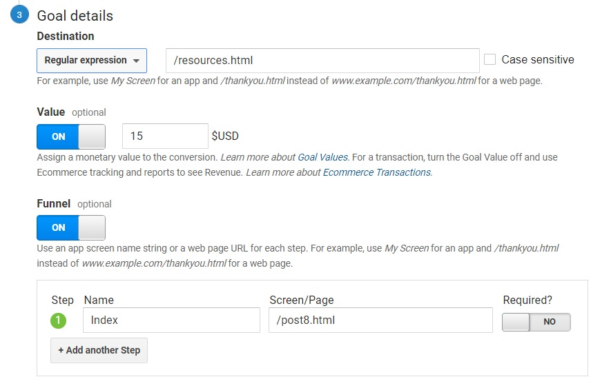

Intro
I thought long and hard about what goal I would create in order to test Google Analytics' features. This entire quarter was dedicated to aspects of web usability and understanding on a personal level how our decisions as developers have repercussions whether we are aware of it or not. For this reason, I want to spread more awareness on usability concepts and incorporate this goal into Google Analytics.
Goal
The conditions of my goal are very simple. In order for Google to register a goal conversion or successful event, a user would have to click on the link that will take them to my resources page which provides extra reading materials. This link is located in the index page as well as the drop down menu.
Set Up
I followed the instructions detailed in this article in order to set up my destination goal. Google has premade templates available but, in this case, I needed to create a custom destination goal. However, the process is painless and resources on the subject plenty.
 In order to set up my goal, I had to define the following: end page, value, and funnel (optional).Funnel
The funnel will live and die by the index page. Users must navigate to that specific page and click on the link. So, no matter where the user is located on my journal, the index will have to be located. I wanted to try a narrow funnel for this first week of collecting data to see the difference between narrow and open funnels.
As you can see, it is a very narrow funnel.I've sent out links with the goals registered and set up prior to typing this up. The below screenshots show that people have completed the goal.
 4 completions (although 1 comes from me) from friends and family (real time).
4 completions (although 1 comes from me) from friends and family (real time).
Conclusion
At the moment, I've pigeonholed myself into a corner when it comes to how a user can complete my task. The conditions to complete my goal is narrow and there is also not much happening on my page to draw attention to it as well. Although, I'm hoping that this post will create more awareness of the goal, I will need to revisit how I want to approach the goal.